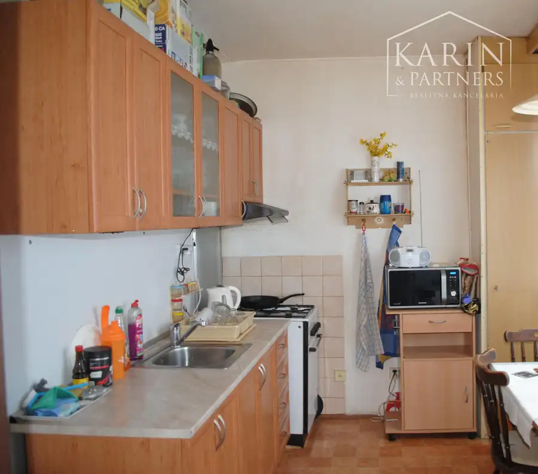
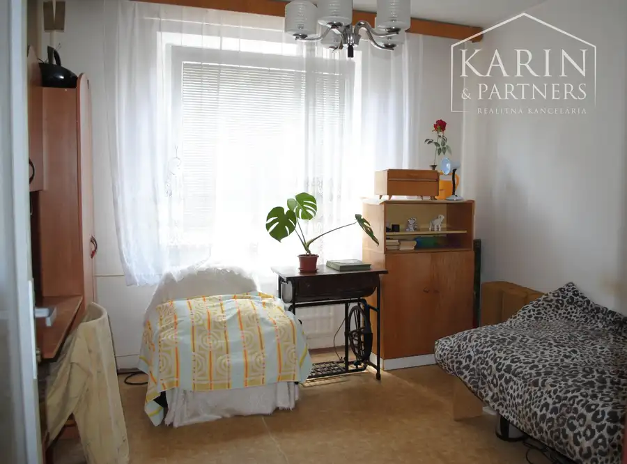

Priestranný slnečný 4 izb. byt Zvolen - Západ
Zvolen



- Dispozícia4-izbový
- Plocha73.41 m²
- Poschodie2.
- StavPôvodný stav
- VlastníctvoOsobné
O nehnuteľnosti
Ponúkame Vám na predaj 4 izb. slnečný byt v lokalite Západ vo Zvolene. Tento byt sa nachádza na 2. poschodí a je bez balkóna. Výhodou sú 4 izby a prerobené plastové okná. Všetko ostatné si viete urobiť podľa svojich predstáv. Pôdorys je navrhnutý pre jednoduché bývanie pre viacčlennú rodinu. Byt je slnečný, okná sú z každej strany a má oddelené WC. V kúpeľni máme vaňu a práčku. Bytový panelový dom je zateplený s výťahom na sídlisku s plnou občianskou vybavenosťou a parkovanie je pre domom.Dispozičné riešenie:Do bytu vchádzate hlavným vstupom do priestrannej chodby kde po ľavej strane máme oddelené WC a Kúpeľňu s vaňou a práčkou. Oproti obývaciu izbu a po pravej strane spálňu. Vieme prejsť po chodbe do študentskej izby a pri kuchyni detskej izby. V kuchyni máme plynový sporák a plynovú rúru. K bytu prislúcha aj látková pivnica.Popis nehnuteľnosti:celková výmera 4 izb. bytu je 73,41 m2celkové náklady na bývanie sú do 250€ pre 2 osobypriestranná kuchyňa, plynový sporák aj rúrav kúpeľni je vaňa, práčkaústredné vykurovanie, merače teplaplastové oknápôvodné podlahypôvodné umakartové jadrobyt je napojený na verejný vodovod a kanalizáciuoptikav byte je možné ponechať nábytok po dohode s majiteľomseparovaný zber odpaduelektrika aj voda pôvodnávýťahosobné vlastníctvo, financovanie hypotékou možné (pomôžeme Vám s jej vybavením ZADARMO - najlacnejšia hypotéka na trhu je u nás)Celkový dojem makléra Tento byt Vás očarí ako investícia na prenájom ale aj ak máte viacčlennú rodinu, lebo si nájdete v ňom svoj osobný priestor. Celý 4 izbový byt je svetlý, teplý s nízkymi nákladmi. Kúpeľňu, oddelené WC či kuchyňu si viete urobiť podľa vlastných predstáv. Byt je síce v pôvodnom stave ale aj tak pripravený ihneď na bývanie. Sídlisko Západ má kompletnú občiansku vybavenosť. Táto nehnuteľnosť je vhodná pre klienta, ktorý miluje slnečný byt , stromy, vlastný priestor a je vhodný aj ako investícia do prenájmu pre 4 osoby. V súčasnosti sa byt vypratáva preto nie sú uvedené aktuálne fotografie.Predáme aj vašu nehnuteľnosť, stačí zavolať Naša realitná kancelária pre Vás zabezpečí kompletný servis od začiatku až po koniec. Na začiatku sa postaráme o profesionálnu inzerciu, obhliadky a to v prípade potreby klienta aj cez víkend, následne sa postaráme o vypracovanie rezervačných a kúpnych zmlúv, poskytnutie možnosti najvýhodnejšieho úveru, kompletný právny servis potrebný k predaju či kúpe nehnuteľnosti. Odovzdanie nehnuteľnosti so všetkou potrebnou dokumentáciou. Stačí iba zavolať. Teším sa na obhliadku s Vami.Ing. Viera Igriniová, igriniova@karinpartners.sk, 0908 16 75 74
Parametre
- Cellar area
- 2 m²
- Cena vrátane energií
- Nie
- Druh
- 4 izbový byt
- Dátum zverejnenia
- 03. 05. 2026
- Energie
- 250
- Podlažie
- 2
- Počet izieb / miestností
- 4
- Počet pivníc
- 1
- Stav nehnuteľnosti
- Pôvodný stav
- Telekomunikácie
- Optická sieť
- Typ
- Predaj
- Typ konštrukcie
- Panelová
- Umiestnenie
- Ďalšie nadzemné podlažie
- Vlastníctvo
- Osobné
- Vybavenie
- Pivnica, Verejné parkovanie, Špajza, Výťah
- Vykurovanie
- Ústredné
- Zariadenie
- Zariadené kompletne
- Úžitková plocha
- 73.41 m²